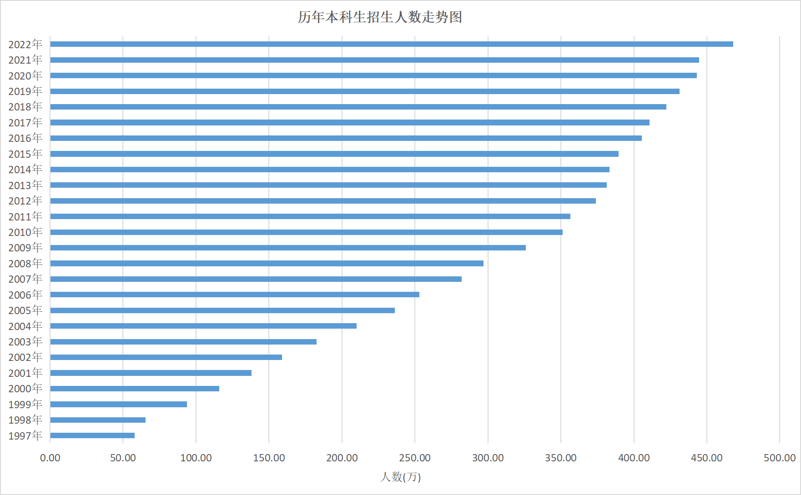
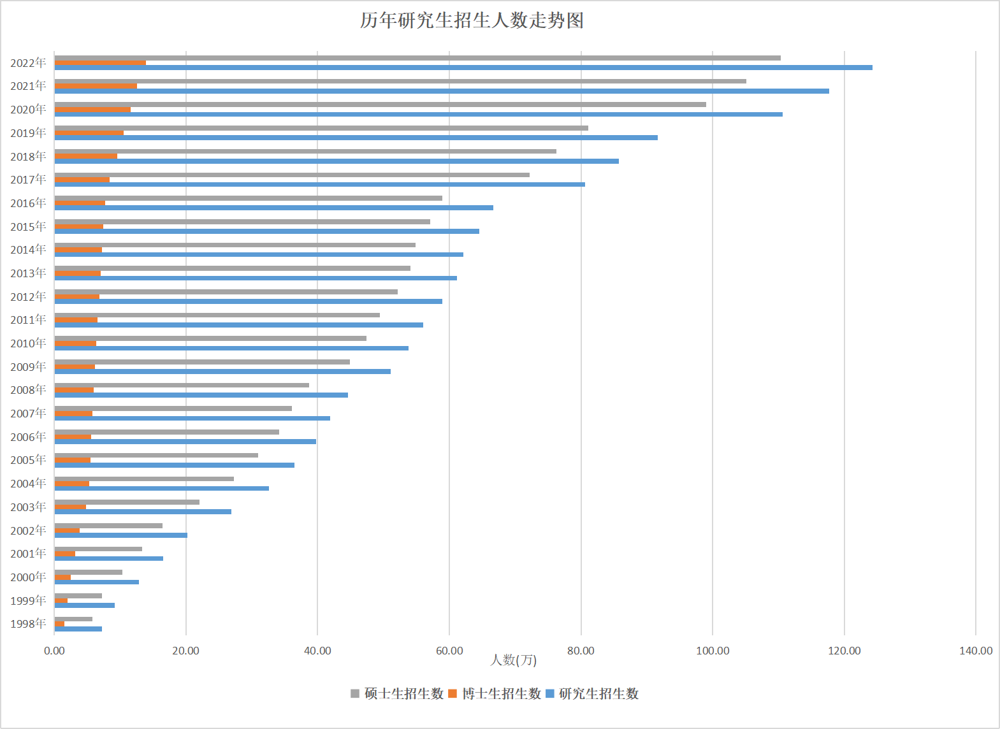
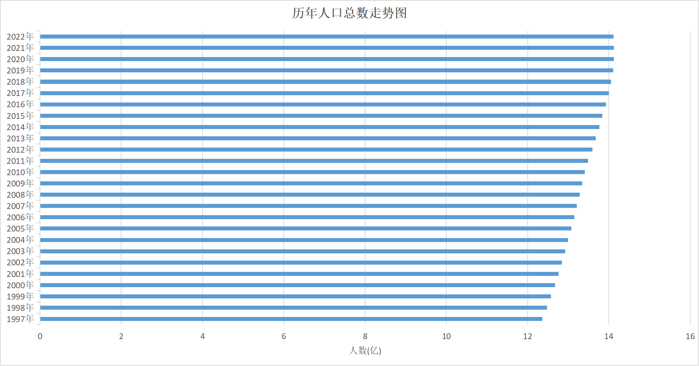
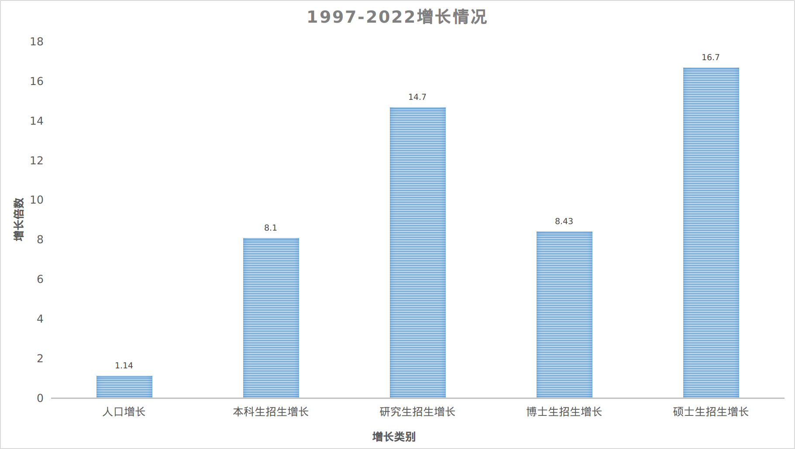

火热的夏季中，高考已经公布成绩，开始进入志愿填报环节。张雪峰，一个高考志愿填报咨询师，最近着实火了一番，也引起了人民日报的批评。看了看他的视频，其观点确实还是比较接地气的，普通家庭的孩子，高考志愿不要谈情怀，谈理想，还是要以就业为主，很多专业方向的就业是依赖于家庭背景资源的。
确实在高等教育大事扩张、经济形式下滑、行业单位存在大量无形玻璃门的今天，没资源、成绩普通的孩子在填报高考志愿需要注重后续的毕业就业，这个选择很重要的。
自从90年代朱镕基那届政府提出”教育产业化”，明显感觉大学生规模日渐庞大，现在早就不再提”教育产业化”，但高等教育扩展速度依然惊人。这些都是些感性的认识，缺乏具体翔实的数据支持，偶然看到了网上转载的教育部《2022年全国教育事业发展统计公报》，于是去教育部网站溜达一番，确实发现了一些具体数据。
以下内容数据均来自教育部网站的《教育统计数据》和《教育发展统计公报》版块，其中本科生从1997年、研究生从1998年开始发布数据。

普通高等教育本科生招生规模(不包括成人高考等)从1997年的57.9万增长到2022年的467.94万，25年足足增加了8.1倍。

根据教育部办公厅《关于统筹全日制和非全日制研究生管理工作的通知》（教研厅[2016]2号）有关要求，2017年起研究生招生、在校生指标内涵发生变化，增加了非全日制研究生数据。但只有2017、2018年公布了全日制研究的数量，后续年份没有发布这样的口径统计数据，从两年发布的数据来看，全日制研究生在研究生中占比为85-86%,估计后续这个比例会增长，而且推测非全日制研究生主要集中在硕士研究生中。
研究生招生数从1998年的7.25万增加到2022年的124.25万，24年间足足足增长了17.1倍；即使2022年全日制占比只有86%(106.86万)，24年间也增长了14.7倍。
博士生招生从1998年的1.5万增加到2022年的13.9万，24年间增长了9.3倍,全日制占比如果按90%(12.51万)估算,24年间也增长了8.43倍。
硕士生招生从从1998年的5.75万增加到2022年的110.35万，24年间增长了19.2倍,全日制占比如果按87%(96.00万)估算,24年间也增长了16.7倍。
这些年人口总量增长如何呢？查询国家统计局，发现这些年人口增长不大。

从1997年12.36亿到2022年14.12亿，人口基本保持稳定，25年增长了1.14倍。
再对以上数据进行分类比较，研究生招生数据按估算全日制研究生数据折算增长率：

从以上类比看，相对人口增长，高等教育招生人数增长很快，本科生招生增长率和博士招生增长率差不多，硕士生招生增长率是前两者的两倍。
随着社会的发展、科技的进步、经济的成长，我们的国家可能需要更多的人才；但究竟需要多少经过高等教育培养的人才，我没有足够数据、也没有成熟方法，无法进行判断。但从直观感受出发，现有的经历高等教育的人数是远远超过社会的需求的，最近十多年，几乎每年都被视为应届大学生最难就业季，为了谋生，很多毕业学生不得不从事与所接受高等教育完全无关的普通劳作岗位。
那为啥要进行高僧教育持续高速扩张呢？从目前来看，这一势头没有消减的趋向。我的老家四川宜宾市，2022年常住人口461.8万人,2022年人均GDP7.4万元人民币。就这样一个四线地级市，2016年提出建立”长江国际科教城”,据此设立大学城，到目前为止已有9个外地大学入驻，分别是：
四川轻化工大学宜宾校区、西华大学宜宾校区、成都工业学院宜宾校区、电子科技大学宜宾研究院、四川大学宜宾园区、四川外国语大学成都学院宜宾校区、成都理工大学宜宾校区、西南交通大学宜宾研究院、西南大学宜宾研究院
为啥高等教育如此扩张，思来想去，这个也是很具备”中国特色”的思路。
从中央政府的角度看，这个当然属于拉动内需，拓展就业岗位的举措，同时让年轻人多在学校里呆几年，延迟进入工作的时间，也算是缓解就业困难的措施吧。
从地方政府的角度来看，这个也是拉动内需，拓展就业岗位的措施,依据四川观察(四川电视台四川观察官方账号微信公众号)2023-02-18的报道《走进宜宾三江新区｜人往三江聚：探寻学教研产城的融合之路》：
7年前，宜宾只有1所本科院校和1所高职院校，而如今，12所一流高校，欧阳明高、邓中翰院士工作站以及吴锋院士锂电创新中心纷纷入驻。到今年春天，宜宾在校大学生达到9万人，其中，位于三江新区的大学城就有5.5万人。
这9万在校大学生，至少有一多半是入读引进高校里的，这需要多少基础设施建设呀，包括学校的教室、宿舍，还有一堆的配套设施，除了学生，还得有老师，行政后勤管理等，老师可能还是需要外聘，但后勤等岗位确实可以为本地提供很多就业岗位的，更别提这十多万人的学生、教师、后勤等庞大人群又会拉动本地的消费，创造更多的就业岗位。
对于有着望子成龙、望女成凤传统思维的中国百姓，习惯按工作、生活划分等级的家长而言，都希望孩子能进入大学学习，在大幅扩招的基础上，现在小孩考入大学的机会比30年前确实大了很多，极大满足了普通百姓渴望孩子上大学的心愿，虽然毕业后却发现孩子的大学文凭(普通一本、二本)基本无用，但还是免不了有梦想呀。